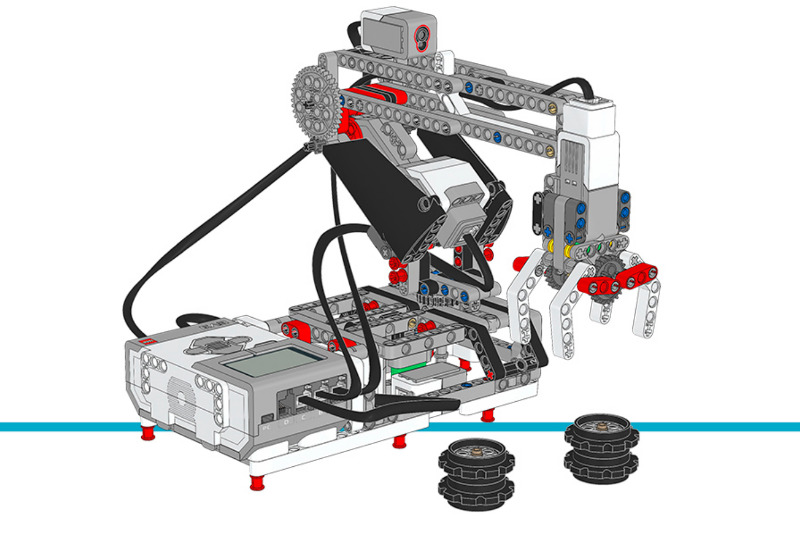

ロボットアーム H25¶
このサンプルプログラムでは、ロボットアーム H25が黒いホイールハブの スタックをずっと動かし続けます。ロボットアームはまず初期化を行い、 その後ハブを動かし始めます。
組み立て説明書
こちらからコアセットモデルの組み立て説明書をすべて確認できます。また、 このリンクからロボットアーム H25の説明書に直接アクセスできます。
Tip
ロボットを組み立てるときは、microSDカードを抜き差ししやすいように、 EV3 Brickの向きを逆にしてください。

図28 ロボットアーム H25
サンプルプログラム
#!/usr/bin/env pybricks-micropython
"""
Example LEGO® MINDSTORMS® EV3 Robot Arm Program
-----------------------------------------------
This program requires LEGO® EV3 MicroPython v2.0.
Download: https://education.lego.com/en-us/support/mindstorms-ev3/python-for-ev3
Building instructions can be found at:
https://education.lego.com/en-us/support/mindstorms-ev3/building-instructions#building-core
"""
from pybricks.hubs import EV3Brick
from pybricks.ev3devices import Motor, TouchSensor, ColorSensor
from pybricks.parameters import Port, Stop, Direction
from pybricks.tools import wait
# EV3 Brickを初期化します
ev3 = EV3Brick()
# ポートAのグリッパーモーターをデフォルト設定で設定します。
gripper_motor = Motor(Port.A)
# 肘のモーターを設定します。8歯と40歯のギアが
# 接続されています。正の速度値でアームが
# 上に動くようにします。これはモーターの反時計回りの
# 回転に相当します。
elbow_motor = Motor(Port.B, Direction.COUNTERCLOCKWISE, [8, 40])
# ベースを回転させるモーターを設定します。12歯と
# 36歯のギアが接続されています。正の速度値でアームが
# タッチセンサーから離れる方向に動くようにします。
# これはモーターの反時計回りの回転に相当します。
base_motor = Motor(Port.C, Direction.COUNTERCLOCKWISE, [12, 36])
# 肘とベースの加速度を制限します。これにより、
# 産業用ロボットのような非常に滑らかな動きになります。
elbow_motor.control.limits(speed=60, acceleration=120)
base_motor.control.limits(speed=60, acceleration=120)
# タッチセンサーをセットアップします。ロボットアームのベースにある
# エンドスイッチとして機能し、ベースの起点を定めます。
base_switch = TouchSensor(Port.S1)
# カラーセンサーをセットアップします。肘が開始位置にあることを
# 検出します。センサーが白いビームを間近で
# 見たときです。
elbow_sensor = ColorSensor(Port.S3)
# 肘を初期化します。まず1秒間下げます。
# 次に、カラーセンサーが白いビームを検出するまで
# ゆっくり(毎秒15度)上げます。その後モーターの角度をリセットして
# ここをゼロ点にします。最後に、モーターをその場で
# 保持して動かないようにします。
elbow_motor.run_time(-30, 1000)
elbow_motor.run(15)
while elbow_sensor.reflection() < 32:
wait(10)
elbow_motor.reset_angle(0)
elbow_motor.hold()
# ベースを初期化します。まずベースのタッチセンサーが
# 押されるまで回転させます。モーターの角度をリセットして
# ここをゼロ点にします。その後、モーターをその場で保持して動かないようにします。
base_motor.run(-60)
while not base_switch.pressed():
wait(10)
base_motor.reset_angle(0)
base_motor.hold()
# グリッパーを初期化します。まずモーターがストールするまで回転させます。
# ストールとは、それ以上動けなくなることです。この位置が
# 閉じた位置に相当します。次にモーターを90度回転させて
# グリッパーを開きます。
gripper_motor.run_until_stalled(200, then=Stop.COAST, duty_limit=50)
gripper_motor.reset_angle(0)
gripper_motor.run_target(200, -90)
def robot_pick(position):
# この関数はロボットのベースを指定した位置まで回転させます。
# そこで肘を下げてグリッパーを閉じ、
# 肘を上げてオブジェクトをつかみ上げます。
# つかみ取り位置まで回転します。
base_motor.run_target(60, position)
# アームを下げます。
elbow_motor.run_target(60, -40)
# グリッパーを閉じてホイールスタックをつかみます。
gripper_motor.run_until_stalled(200, then=Stop.HOLD, duty_limit=50)
# アームを上げてホイールスタックを持ち上げます。
elbow_motor.run_target(60, 0)
def robot_release(position):
# この関数はロボットのベースを指定した位置まで回転させます。
# そこで肘を下げてグリッパーを開き、オブジェクトを
# 離します。その後、再びアームを上げます。
# 置きに行く位置まで回転します。
base_motor.run_target(60, position)
# アームを下げてホイールスタックを地面に置きます。
elbow_motor.run_target(60, -40)
# グリッパーを開いてホイールスタックを離します。
gripper_motor.run_target(200, -90)
# アームを上げます。
elbow_motor.run_target(60, 0)
# 初期化が完了したことを3回のビープ音で知らせます。
for i in range(3):
ev3.speaker.beep()
wait(100)
# ホイールスタックをつかんで移動させる3つの行き先を定義します。
LEFT = 160
MIDDLE = 100
RIGHT = 40
# プログラムのメイン部分です。無限に繰り返すループです。
#
# まず、左側のオブジェクトを中央に移動します。
# 次に、右側のオブジェクトを左側に移動します。
# 最後に、中央にあるオブジェクトを右側に移動します。
#
# これで、前と同じように左右にホイールスタックがある状態になりますが、
# 場所が入れ替わっています。この後ループが繰り返され、同じことを行い続けます。
while True:
# ホイールスタックを左から中央へ移動します。
robot_pick(LEFT)
robot_release(MIDDLE)
# ホイールスタックを右から左へ移動します。
robot_pick(RIGHT)
robot_release(LEFT)
# ホイールスタックを中央から右へ移動します。
robot_pick(MIDDLE)
robot_release(RIGHT)